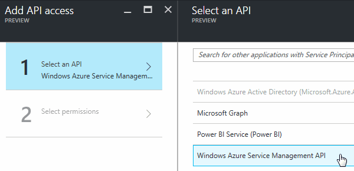
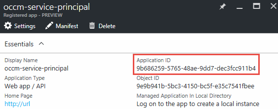
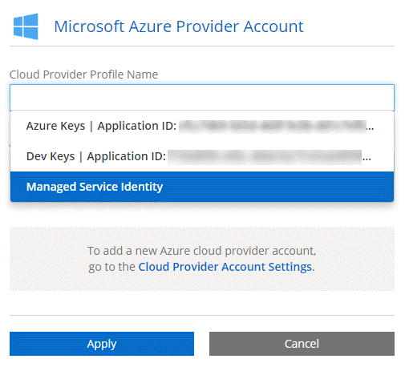
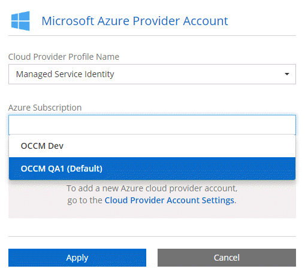

Versionshinweise
Versionshinweise
Cloud-Provider-Konten zu Cloud Manager hinzufügen
 Änderungen vorschlagen
Änderungen vorschlagen
Wenn Sie Cloud Volumes ONTAP in verschiedenen Cloud-Konten implementieren möchten, müssen Sie diese Konten die erforderlichen Berechtigungen erteilen und anschließend die Details zu Cloud Manager hinzufügen.
Bei der Implementierung von Cloud Manager über Cloud Central fügt Cloud Manager automatisch einen hinzu "Konto eines Cloud-Providers" Für das Konto, in dem Sie Cloud Manager implementiert haben. Ein anfängliches Cloud-Provider-Konto wird nicht hinzugefügt, wenn Sie die Cloud Manager Software manuell auf einem vorhandenen System installieren.
Einrichten und Hinzufügen von AWS Konten zu Cloud Manager
Wenn Sie Cloud Volumes ONTAP in verschiedenen AWS Konten implementieren möchten, müssen Sie diese Konten die erforderlichen Berechtigungen erteilen und anschließend die Details zu Cloud Manager hinzufügen. Wie Sie die Berechtigungen bereitstellen, hängt davon ab, ob Sie Cloud Manager mit AWS Schlüsseln oder dem ARN einer Rolle in einem vertrauenswürdigen Konto bereitstellen möchten.
Gewähren von Berechtigungen bei der Bereitstellung von AWS Schlüsseln
Wenn Sie Cloud Manager mit AWS Schlüsseln für einen IAM-Benutzer bereitstellen möchten, müssen Sie diesem Benutzer die erforderlichen Berechtigungen erteilen. Die Cloud Manager IAM-Richtlinie definiert die AWS-Aktionen und -Ressourcen, die Cloud Manager verwenden darf.
-
Laden Sie die IAM-Richtlinie von Cloud Manager aus herunter "Seite „Cloud Manager Policies“ aufgeführt".
-
Erstellen Sie über die IAM-Konsole Ihre eigene Richtlinie, indem Sie den Text aus der Cloud Manager IAM-Richtlinie kopieren und einfügen.
-
Hängen Sie die Richtlinie an eine IAM-Rolle oder einen IAM-Benutzer an.
Das Konto verfügt nun über die erforderlichen Berechtigungen. Sie können es jetzt zu Cloud Manager hinzufügen.
Gewährung von Berechtigungen durch Annahme von IAM-Rollen in anderen Konten
Sie können eine Vertrauensbeziehung zwischen dem Quell-AWS-Konto einrichten, in dem Sie die Cloud Manager-Instanz und anderen AWS-Konten mithilfe von IAM-Rollen bereitgestellt haben. Dann würden Sie Cloud Manager über die vertrauenswürdigen Konten mit dem ARN der IAM-Rollen versorgen.
-
Rufen Sie das Zielkonto auf, in dem Sie Cloud Volumes ONTAP bereitstellen und eine IAM-Rolle erstellen möchten, indem Sie ein weiteres AWS-Konto auswählen.
Gehen Sie wie folgt vor:
-
Geben Sie die ID des Kontos ein, auf dem sich die Cloud Manager Instanz befindet.
-
Hängen Sie die Cloud Manager IAM-Richtlinie an, die über die erhältlich ist "Seite „Cloud Manager Policies“ aufgeführt".

-
-
Wechseln Sie zum Quellkonto, in dem sich die Cloud Manager Instanz befindet, und wählen Sie die IAM-Rolle aus, die mit der Instanz verbunden ist.
-
Klicken Sie auf Vertrauensverhältnis > Vertrauensverhältnis bearbeiten.
-
Fügen Sie die Aktion „STS:AssumeRole“ und den ARN der Rolle hinzu, die Sie im Zielkonto erstellt haben.
Beispiel
{ "Version": "2012-10-17", "Statement": { "Effect": "Allow", "Action": "sts:AssumeRole", "Resource": "arn:aws:iam::ACCOUNT-B-ID:role/ACCOUNT-B-ROLENAME" } } -
Das Konto verfügt nun über die erforderlichen Berechtigungen. Sie können es jetzt zu Cloud Manager hinzufügen.
Hinzufügen von AWS Konten zu Cloud Manager
Nachdem Sie ein AWS Konto mit den erforderlichen Berechtigungen bereitgestellt haben, können Sie das Konto zu Cloud Manager hinzufügen. Damit können Sie Cloud Volumes ONTAP Systeme in diesem Konto starten.
-
Klicken Sie oben rechts in der Cloud Manager-Konsole auf die Dropdown-Liste Task und wählen Sie dann Kontoeinstellungen aus.
-
Klicken Sie auf Neues Konto hinzufügen und wählen Sie AWS.
-
Sie können entscheiden, ob Sie AWS Schlüssel oder den ARN einer vertrauenswürdigen IAM-Rolle bereitstellen möchten.
-
Bestätigen Sie, dass die Richtlinienanforderungen erfüllt wurden, und klicken Sie dann auf Konto erstellen.
Sie können jetzt auf der Seite Details und Anmeldeinformationen zu einem anderen Konto wechseln, wenn Sie eine neue Arbeitsumgebung erstellen:

Einrichten und Hinzufügen von Azure-Konten zu Cloud Manager
Wenn Sie Cloud Volumes ONTAP in verschiedenen Azure-Konten implementieren möchten, müssen Sie diese Konten die erforderlichen Berechtigungen erteilen und anschließend Details zu den Konten in Cloud Manager einfügen.
Azure-Berechtigungen über einen Service-Principal gewähren
Cloud Manager benötigt Berechtigungen zum Ausführen von Aktionen in Azure. Sie können einem Azure-Konto die erforderlichen Berechtigungen erteilen, indem Sie einen Service-Principal in Azure Active Directory erstellen und einrichten, sowie die für Cloud Manager erforderlichen Azure Zugangsdaten erhalten.
In der folgenden Abbildung wird dargestellt, wie Cloud Manager Berechtigungen zum Ausführen von Vorgängen in Azure erhält. Ein Service-Prinzipalobjekt, das an ein oder mehrere Azure Subscriptions gebunden ist, stellt Cloud Manager in Azure Active Directory dar und wird einer benutzerdefinierten Rolle zugewiesen, die die erforderlichen Berechtigungen zulässt.


|
Die folgenden Schritte verwenden das neue Azure Portal. Wenn Probleme auftreten, sollten Sie das klassische Azure Portal verwenden. |
Erstellen einer benutzerdefinierten Rolle mit den erforderlichen Cloud Manager-Berechtigungen
Eine benutzerdefinierte Rolle ist erforderlich, um Cloud Manager die Berechtigungen zu geben, die er zum Starten und Managen von Cloud Volumes ONTAP in Azure benötigt.
-
Laden Sie die herunter "Cloud Manager Azure-Richtlinie".
-
Ändern Sie die JSON-Datei, indem Sie dem zuweisbaren Bereich Azure-Abonnement-IDs hinzufügen.
Sie sollten die ID für jedes Azure Abonnement hinzufügen, aus dem Benutzer Cloud Volumes ONTAP Systeme erstellen.
Beispiel
"AssignableScopes": [ "/subscriptions/d333af45-0d07-4154-943d-c25fbzzzzzzz", "/subscriptions/54b91999-b3e6-4599-908e-416e0zzzzzzz", "/subscriptions/398e471c-3b42-4ae7-9b59-ce5bbzzzzzzz" -
Verwenden Sie die JSON-Datei, um eine benutzerdefinierte Rolle in Azure zu erstellen.
Im folgenden Beispiel wird gezeigt, wie eine benutzerdefinierte Rolle mithilfe der Azure CLI 2.0 erstellt wird:
Az Rollendefinition erstellen --Role-Definition C:\Policy_for_Cloud_Manager_Azure_3.6.1.json
Sie sollten nun eine benutzerdefinierte Rolle namens OnCommand Cloud Manager Operator haben.
Erstellen eines Active Directory-Dienstprinzipals
Sie müssen einen Active Directory-Dienstprinzipal erstellen, damit Cloud Manager sich mit Azure Active Directory authentifizieren kann.
Sie müssen über die entsprechenden Berechtigungen in Azure verfügen, um eine Active Directory-Anwendung zu erstellen und die Anwendung einer Rolle zuzuweisen. Weitere Informationen finden Sie unter "Microsoft Azure-Dokumentation: Erstellen Sie mithilfe eines Portals eine Active Directory-Applikation und einen Service-Principal, die auf Ressourcen zugreifen können".
-
Öffnen Sie über das Azure-Portal den Azure Active Directory-Service.

-
Klicken Sie im Menü auf App-Registrierungen (Legacy).
-
Erstellen Sie den Service-Prinzipal:
-
Klicken Sie auf Registrierung neuer Anwendungen.
-
Geben Sie einen Namen für die Anwendung ein, lassen Sie Web App / API ausgewählt, und geben Sie dann eine beliebige URL ein, z. B. http://url
-
Klicken Sie Auf Erstellen.
-
-
Ändern Sie die Anwendung, um die erforderlichen Berechtigungen hinzuzufügen:
-
Wählen Sie die erstellte Anwendung aus.
-
Klicken Sie unter Einstellungen auf erforderliche Berechtigungen und dann auf Hinzufügen.

-
Klicken Sie auf Wählen Sie eine API, wählen Sie Windows Azure Service Management API und klicken Sie dann auf Auswählen.

-
Klicken Sie auf Zugriff auf Azure Service Management als Organisationsbenutzer, klicken Sie auf Auswählen und dann auf Fertig.
-
-
Erstellen Sie einen Schlüssel für den Service Principal:
-
Klicken Sie unter Einstellungen auf Schlüssel.
-
Geben Sie eine Beschreibung ein, wählen Sie eine Dauer aus und klicken Sie dann auf Speichern.
-
Kopieren Sie den Schlüsselwert.
Wenn Sie Cloud Manager einem Cloud-Provider-Konto hinzufügen, müssen Sie den Hauptwert eingeben.
-
Klicken Sie auf Eigenschaften und kopieren Sie dann die Anwendungs-ID für den Service-Principal.
Ähnlich dem Schlüsselwert müssen Sie bei Cloud Manager ein Cloud-Provider-Konto hinzufügen, indem Sie die Anwendungs-ID in Cloud Manager eingeben.

-
-
Ermitteln Sie die Active Directory-Mandanten-ID für Ihr Unternehmen:
-
Klicken Sie im Menü Active Directory auf Eigenschaften.
-
Kopieren Sie die Verzeichnis-ID.

Genau wie die Anwendungs-ID und der Anwendungsschlüssel müssen Sie die Active Directory-Mandanten-ID eingeben, wenn Sie Cloud Manager ein Cloud-Provider-Konto hinzufügen.
-
Sie sollten nun über einen Active Directory-Dienstprinzipal verfügen und die Anwendungs-ID, den Anwendungsschlüssel und die Active Directory-Mandanten-ID kopiert haben. Sie müssen diese Informationen in Cloud Manager eingeben, wenn Sie ein Cloud-Provider-Konto hinzufügen.
Zuweisen der Rolle "Cloud Manager Operator" zum Serviceprinzipal
Sie müssen den Dienstprinzipal an ein oder mehrere Azure Subscriptions binden und ihm die Rolle "Cloud Manager Operator" zuweisen, damit Cloud Manager über Berechtigungen in Azure verfügt.
Wenn Sie Cloud Volumes ONTAP aus mehreren Azure Subscriptions bereitstellen möchten, müssen Sie den Service-Prinzipal an jedes dieser Subscriptions binden. Mit Cloud Manager können Sie das Abonnement auswählen, das Sie bei der Implementierung von Cloud Volumes ONTAP verwenden möchten.
-
Wählen Sie im Azure-Portal im linken Bereich die Option Abonnements aus.
-
Wählen Sie das Abonnement aus.
-
Klicken Sie auf Access Control (IAM) und dann auf Add.
-
Wählen Sie die Rolle OnCommand Cloud Manager Operator aus.
-
Suchen Sie nach dem Namen der Anwendung (Sie können die Anwendung nicht in der Liste finden, indem Sie blättern).
-
Wählen Sie die Anwendung aus, klicken Sie auf Auswählen und dann auf OK.
Der Dienstprinzipal für Cloud Manager verfügt jetzt über die erforderlichen Azure Berechtigungen.
Hinzufügen von Azure-Konten zu Cloud Manager
Nachdem Sie ein Azure Konto mit den erforderlichen Berechtigungen angegeben haben, können Sie das Konto zu Cloud Manager hinzufügen. Damit können Sie Cloud Volumes ONTAP Systeme in diesem Konto starten.
-
Klicken Sie oben rechts in der Cloud Manager-Konsole auf die Dropdown-Liste Task und wählen Sie dann Kontoeinstellungen aus.
-
Klicken Sie auf Neues Konto hinzufügen und wählen Sie Microsoft Azure.
-
Geben Sie Informationen zum Azure Active Directory Service Principal ein, der die erforderlichen Berechtigungen erteilt.
-
Bestätigen Sie, dass die Richtlinienanforderungen erfüllt wurden, und klicken Sie dann auf Konto erstellen.
Sie können jetzt auf der Seite Details und Anmeldeinformationen zu einem anderen Konto wechseln, wenn Sie eine neue Arbeitsumgebung erstellen:

Verknüpfen weiterer Azure-Abonnements mit einer gemanagten Identität
Mit Cloud Manager können Sie das Azure Konto und das Abonnement auswählen, in dem Sie Cloud Volumes ONTAP implementieren möchten. Sie können kein anderes Azure-Abonnement für das verwaltete Identitätsprofil auswählen, es sei denn, Sie verknüpfen das "Verwaltete Identität" Mit diesen Abonnements.
Eine verwaltete Identität ist die erste "Konto eines Cloud-Providers" Wenn Sie Cloud Manager über NetApp Cloud Central implementieren. Bei der Implementierung von Cloud Manager erstellte Cloud Central die Rolle "OnCommand Cloud Manager Operator" und wies sie der virtuellen Cloud Manager-Maschine zu.
-
Melden Sie sich beim Azure Portal an.
-
Öffnen Sie den Dienst Abonnements und wählen Sie dann das Abonnement aus, in dem Sie Cloud Volumes ONTAP-Systeme bereitstellen möchten.
-
Klicken Sie auf Access Control (IAM).
-
Klicken Sie auf Hinzufügen > Rollenzuordnung hinzufügen und fügen Sie dann die Berechtigungen hinzu:
-
Wählen Sie die Rolle OnCommand Cloud Manager Operator aus.
OnCommand Cloud Manager Operator ist der im angegebene Standardname "Cloud Manager-Richtlinie". Wenn Sie einen anderen Namen für die Rolle ausgewählt haben, wählen Sie stattdessen diesen Namen aus. -
Weisen Sie einer virtuellen Maschine Zugriff zu.
-
Wählen Sie das Abonnement aus, in dem die virtuelle Cloud Manager-Maschine erstellt wurde.
-
Wählen Sie die virtuelle Cloud Manager-Maschine aus.
-
Klicken Sie Auf Speichern.
-
-
-
Wiederholen Sie diese Schritte für weitere Abonnements.
Wenn Sie eine neue Arbeitsumgebung erstellen, sollten Sie nun über mehrere Azure-Abonnements für das verwaltete Identitätsprofil verfügen.
